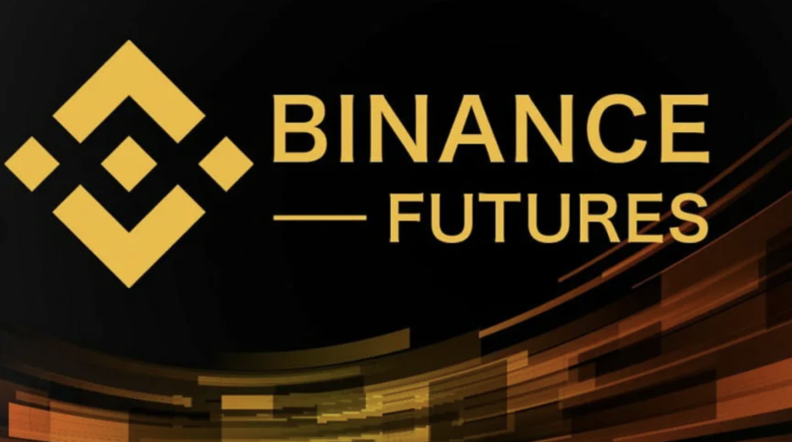
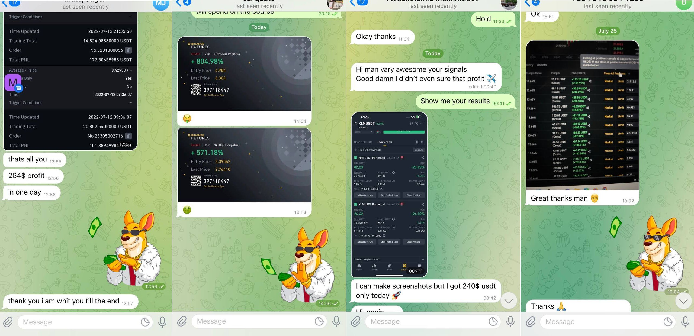
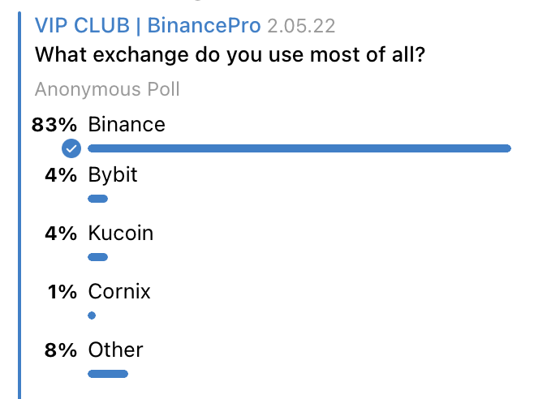
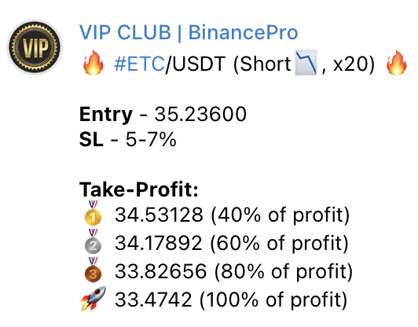

People always want to know their future. The problem is that we can't predict it! But we can give really great signals on Binance Futures that will give you 700-1000% every month🚀
Sounds interesting? 🤑
Read this manual if you have any questions👇
You don't need a broker. You don't need to fill out a bunch of documents. You don't need to wait for the auction to open. You don't need to swear with banks and explain the meaning of bank transfers for the sake of 10% per annum.
In the crypto market, experienced traders make such a profit in 5 minutes.
Welcome to the new world where you can trade 24/7!
Welcome to one of the most promising markets today - the cryptocurrency market.
Is it risky?Crypto market grows or falls but it does not matter. It is important to correctly anticipate the movement, catch the trend and move along with the market.
Cryptocurrency is a chance to multiply your money many times.
But we have to warn you: the risks here are outrageous. And only those who have the baggage of solid experience behind them are able to make money in such a market.
That is why we created our VIP channel where we share our signals which you can use and not to be afraid to lose money!
Where exactly do you trade?We trade only Futures now. Our favourite exchange is Binance.
The main thing in Futures is that you can use a leverage up to x125.
 What about your team and experience?There are 5 people in our team now - analytics and traders. All of us started working on crypto market in 2015-2016 and we started trading futures since the day they were launched on the Binance.
Trends, channels, support and resistance zones, moving averages, Fibonacci levels, AZT, VSA (volume and spread analysis), Price Action, patterns and candlestick analysis, glass visualization and cluster analysis, long-short ratio, the Wyckoff method and a dozen other tools, sometimes very exotic - here is our a gentleman's set.
We have a trading system and strict compliance with the trading strategy, competently built risk management, money management, plan A, plan B and plan D (in case of total loss), a clear understanding of the assets used, the time spent in the trades, the reasons for opening a position, entry points, exit, etc.
With what trading deposit does it make sense to join your VIP channel?The minimum recommended trading deposit size is $100-$200.
The average size of the trading deposit in our VIP channel is $1000-$5000.
What kind of profitability can i expect?!A lot depends on the state of the market.
We give 5-7 signals a day, the average possibility of these signals is 75-80% (negative trades close with small loss).
As an average reference point for the year, you can take 700-1000% per month.
Do you have some feedbacks from your subscribers?We post feedbacks from our VIP members in our public channel every day.
 What is your strategy?We strictly adhere to risk management and adhere to the trading strategy. Entry into a position, as a rule, is carried out by no more than 5-10% of the trading deposit.
We trade with tight stops. The probability of a complete loss of the trading deposit, if all the recommendations are followed, tends to zero. We trade swing, short-term and intraday.
Where can i trade?Just imagine, anywhere in the world you open a MacBook, log into your account on the stock exchange and get access to huge liquidity, from which you can take as much as you carry away.
What can i do if Binance Futures is not allowed in my country?Binance is not the only exchange that you can use.
Look at the poll from our VIP channel.
As you can see, Binance is not the only exchange that our VIP members use.
To find out the answer to this question - you need to try!
People, in principle, do not understand what trading is, or treat it too naively, hoping to earn millions quickly.
You will have to make a lot of mistakes before you will be able to earn. Or you can join our team and get our signals. So, make a choice🤩.
Have you had any losses?Of course we had. We made mistakes and lost money. This is the market and this is the crypt, anything can happen here. But in the long run, we always remain in the black. Do you know why? Because we follow two main rules in trading:
- cut losses
- let the profit grow
Will i understand your signals? How they look like?Signals are very simple for understanding.
Here is all information that you need to know to use our signals:
• asset (ETC/USDT)
• direction (short)
• leverage (x20)
• entry price (35.23600)
• stop-loss (5-7%)
• take profit target (40-100%)
What happens if I decide to dive into the market myself?Get ready to pay for everything with your money, time and nerves.
According to statistics, 95% of traders in the crypto market are in the red.
So, think about it one more time before you decide to o it.
What will i get after joining your VIP channel, how much does it cost and how to pay?You will get there:
✅ 4-5 profitable signals every day
✅ Entry Price/Take Profit/Stop Loss
✅ Technical analysis
✅ Trading strategies
✅ Manuals for beginners
✅ Support during the whole period
VIP Membership Price:
💵 $149 (1 month)
💵 $299 (1 month)
💻 $399 (education course)
💵 $499 (forever)
💻 $2000-$50000 (VIP portfolio management 200% weekly return)
You can pay via your Binance account or some other wallet.
Pay USDT via👉🏻 TRC20
TRWWav1VQFpkZ4okUqk8kHPDULmmASM1ec
Our channel - https://t.me/+0nwHQT9xpGFjNWFk
Our admin - @Andy_future